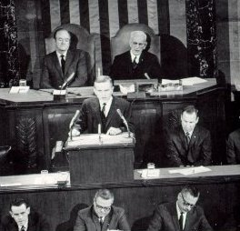
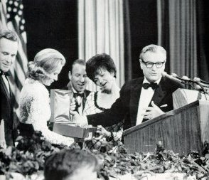
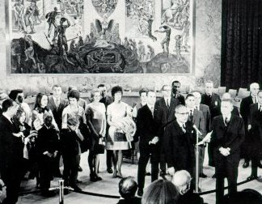

|  | A joint session of Congress convened to hear the first men to fly around the Moon. That's Borman at the Speaker's rostrum with Lovell and Anders wearing expressions of somber dignity. Public appearances were a demanding part of the job. |
|  | On a six-city tour, the Apollo 8 astronauts and their wives received a warm welcome and round of tributes. Here New York Governor Nelson Rockefeller is presenting them with a commemorative Steuben glassware plate titled "The Mountains of the Moon". |
|  | In the United Nations, Secretary General U Thant introduced the astronauts and their families to meimbers assembled in the Security Council chambers. No simulations in Houston nor the Cape had prepared them for this kind of public attention. |